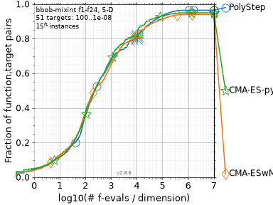
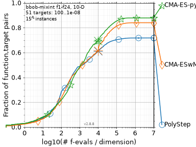

Benchmarks
bbob-mixint
COCO's bbob-mixint suite (Tušar et al., GECCO 2019) has 24 functions where 80% of the variables are integers with 2 to 16 values. Plain CMA-ES tends to stall here, because its step size shrinks below the integer grid. CMA-ES with margin (Hamano et al., GECCO 2022) fixes that with a lower bound on the marginal probabilities. PolyStep never shrinks its radius below what you give it, so we wanted to see how it compares.
We ran dimensions 5 and 10, instances 1-15, one run each, with a budget of 10^4 * dim evaluations. PolyStep used PolyStepES with the box bounds, a repair that rounds the integer coordinates, a geometric radius decay and random restarts. Its three settings (epsilon = 0.1, starting radius equal to the mean box width, decay 0.95) were tuned on dimension 20, which is not in the table. The two baselines are the archived COCO runs of CMA-ES with margin (2022) and pycma (2019); we did not tune them. Everything needed to rerun this is in benchmark/.
The table shows the fraction of (function, instance, target) triples solved, for 51 targets from 10^2 down to 10^-8, after 100, 1000 and 10^4 evaluations per dimension:
| dim | group | PolyStep | CMA-ES with margin | CMA-ES (pycma) |
|---|---|---|---|---|
| 5 | all | .37 / .68 / .80 | .37 / .65 / .81 | .36 / .67 / .82 |
| 5 | separable | .52 / .83 / .89 | .62 / .87 / 1.0 | .55 / .91 / 1.0 |
| 5 | multimodal | .26 / .62 / .84 | .25 / .58 / .80 | .23 / .59 / .80 |
| 5 | multimodal, weak structure | .27 / .49 / .64 | .22 / .40 / .58 | .24 / .43 / .62 |
| 10 | all | .29 / .49 / .61 | .24 / .48 / .62 | .22 / .49 / .69 |
| 10 | separable | .45 / .59 / .78 | .46 / .77 / .85 | .31 / .75 / .90 |
| 10 | multimodal | .17 / .47 / .56 | .14 / .41 / .53 | .14 / .35 / .66 |
| 10 | multimodal, weak structure | .23 / .26 / .39 | .13 / .18 / .45 | .16 / .22 / .49 |
Up to 1000 * dim evaluations, PolyStep solves about as many targets as the better CMA-ES, or more, and most of its lead comes from the multimodal functions. With the full budget it ties CMA-ES with margin and falls behind pycma, clearly so in dimension 10. It is weakest on separable functions, where both CMA-ES variants hit every target in dimension 5. The conditioning groups are mixed and left out here; the script prints them.
Take this as a small pilot (15 runs per function and dimension), not a ranking. The plots are COCO's runtime ECDFs. Past each algorithm's budget (the cross), cocopp extends the curves with simulated restarts.


Examples
The scripts in examples/ compare PolyStep with tuned baselines on OR and decision-focused learning problems. Their results are on the home page.